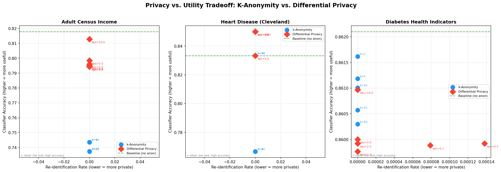
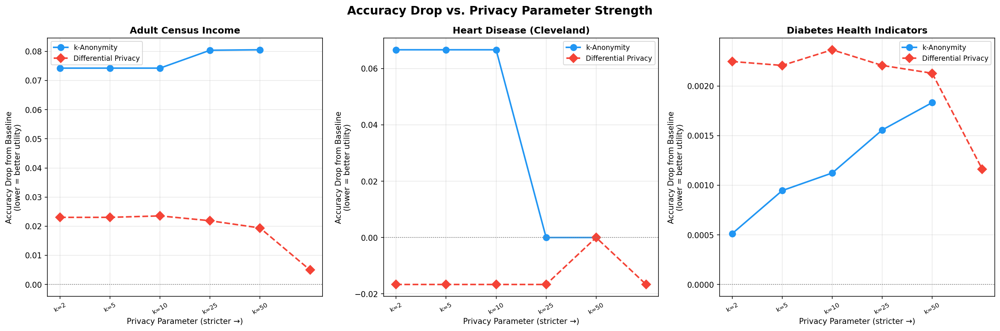
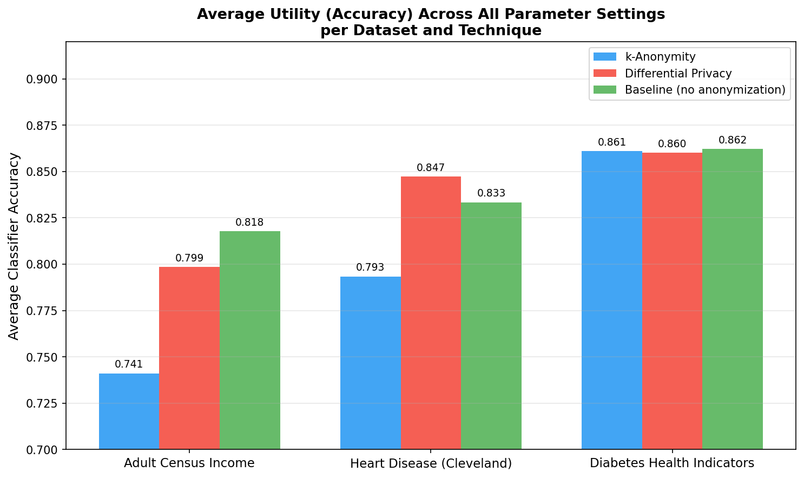
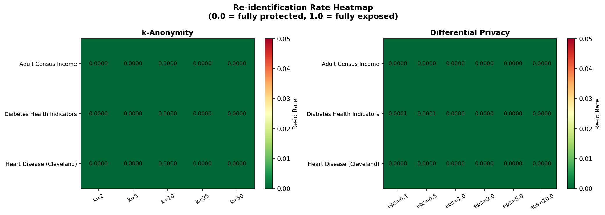
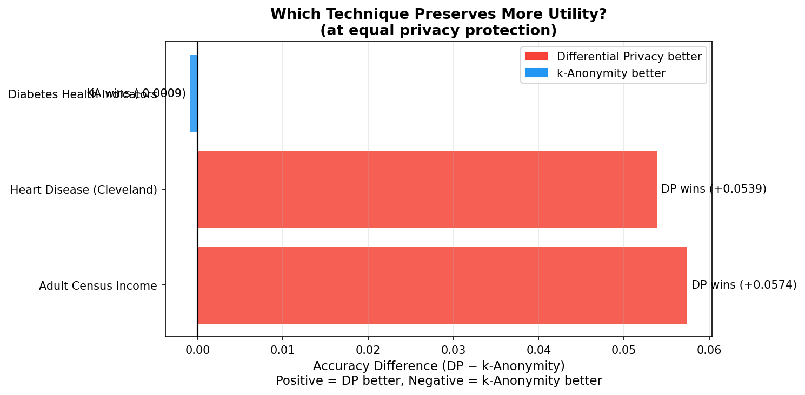

CSCI 581 (University of Mississippi) final project. Both major data-anonymization techniques are implemented from scratch and evaluated head-to-head on the same three public datasets and the same utility/privacy metrics, to answer a question the surveyed literature leaves open: which one actually preserves more usable data in practice, at equivalent privacy protection?
K-anonymity and differential privacy were each implemented independently in Python and applied to three public datasets of varying size and domain: Adult Census Income (30,162 records), Heart Disease — Cleveland (297 records), and Diabetes Health Indicators (253,680 records). Each dataset was split 80/20 into an anonymized training set and a held-out test set.
Both techniques were then scored on the same two axes: a logistic regression classifier's accuracy on the true held-out test set (utility) and an exact-match reidentification rate against the anonymized training set (privacy) — putting every k setting and every ε setting on identical footing for direct comparison.
Differential privacy preserved significantly more utility than k-anonymity on two of the three datasets, while both techniques achieved effectively equivalent, near-zero reidentification rates across every parameter setting tested — making utility the deciding factor between them.
| Dataset | Baseline accuracy | Avg. k-anonymity accuracy | Avg. DP accuracy | DP − k-anon |
|---|---|---|---|---|
| Adult Census Income | 0.818 | 0.741 | 0.799 | +5.74 pp |
| Heart Disease (Cleveland) | 0.833 | 0.793 | 0.847 | +5.39 pp |
| Diabetes Health Indicators | 0.862 | 0.861 | 0.860 | −0.09 pp |
K-anonymity generalizes by collapsing every record in a partition to that partition's mean, destroying within-partition variation that a classifier needs to learn from — irreversibly, and more so on small or high-skew datasets. Differential privacy instead adds noise per-record while leaving the overall statistical distribution largely intact, so it degrades gracefully. The one exception is the large Diabetes dataset, where k-anonymity's partitions stay small and tight enough that generalization barely changes the data, closing the gap.




